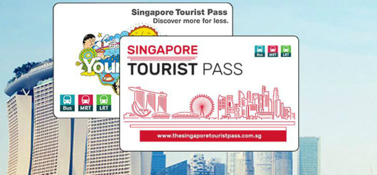

新加坡拥有十分完善的公共交通系统，覆盖地区广，基本每个景点都有公共交通工具可便捷到达，让您轻松出行。
易通卡
如果想更方便地使用地铁和公共巴士等交通工具，可购买一张EZ-Link Card交通储值卡（易通卡），会比购买单程票优惠，可在机场到达大厅、地铁站或7-11便利店购买。首次购买需支付10新元，其中有5新元卡费不退还，余额为5新元。注意，当卡中余额小于3新元时不能进站乘车，每个地铁站都设有自助充值机。
游客可购买特别的储值易通卡（新加坡游客通行卡），游客通行卡可按需要而选择不同的套餐 – 一天（10新币），两天（16新币），三天（20新币）无限次乘坐巴士、地铁及轻轨（不适用于搭乘如圣淘沙快捷、RWS8、特快、夜间巴士、夜猫子的特级巴士服务）。游客通行卡在以下地铁站的售票处出售：樟宜机场、乌节、牛车水、政府大厦、莱佛士坊、宏茂桥、港湾、武吉士、劳明达和海湾舫。通行卡的有效期与公共交通系统的运营时间相关，一般巴士服务到凌晨（12点）结束。
购买通行卡须收取10新币押金，如在购买该卡后的6天内到办事处退还，可全额取回押金。如想保留该卡作为纪念品，即意味着您将放弃10新币的押金。游客通行卡到有效期时，进行充值可作为通行卡继续，并获得5天额外租期。亦可继续作为普通的易通卡使用。易通卡除了新加坡公共交通网络，也可以作为支付方式在接受易通卡的商户进行消费。
详情可参阅以下网页
网址：http://thesingaporetouristpass.com

地铁
除了建设中和规划中的汤申－东海岸线、裕廊区域线和跨岛线，新加坡地铁目前有南北线，东西线，东北线，环线，滨海市区线五条线路。一般地铁服务到凌晨12点30分结束。
东西线（绿色）
东西线（East-West Line），由巴西立（Pasir Ris）至裕群（Joo Koon），并于丹那美拉（Tanah Merah）设机场铁路支线，经过博览站（Expo）往来于樟宜机场站（Changi Airport）。东西线于政府大厦站（City Hall）、莱佛士坊站（Raffles Place）及裕廊东站（Jurong East）接驳南北线，于欧南园站（Outram Park）接驳东北线，于波纳维斯达站（Buona Vista）、巴耶利峇站（Paya Lebar）接驳环线，于武吉士站（Bugis）接驳滨海市区线。
南北线（红色）
南北线（North-South Line），由滨海南码头（Marina South Pier）至裕廊东（Jurong East），途经乌节路、宏茂桥（Ang Mo Kio）及兀兰（Woodlands）。南北线于政府大厦站（City Hall）、莱佛士坊站（Raffles Place）及裕廊东站（Jurong East）接驳东西线，于多美歌站（Dhoby Ghaut）接驳东北线和环线，于碧山站（Bishan）接驳和环线，及于滨海湾站（Marina Bay）接驳环线滨海湾支线。另在蔡厝港站（Choa Chu Kang）可换乘武吉班让（Bukit Panjang）区域无人驾驶轻轨系统。
东北线（紫色）
东北线（North-East Line）为新捷运（SBS Transit）营运的路线，由港湾（HarbourFront）至榜鹅（Punggol），途经牛车水、小印度民族区，为新加坡地铁和全世界地铁路线中第一条无人驾驶的重型地铁路线，亦是新加坡地铁第一条全线均于地底行驶，没有任何路段建于桥面上的路线。东北线于港湾站（HarbourFront）接驳环线、欧南园站（Outram Park）接驳东西线，多美歌站（Dhoby Ghout）接驳南北线和环线及于实龙岗站（Serangoon）接驳环线。另在盛港站（Sengkang）及榜鹅站（Punggol）可换乘新捷运营运的区域无人驾驶轻轨系统。
环线（橘黃色）
环线（Circle Line）共28个车站（不包括武吉布朗地铁站），全线无人驾驶的地铁路线。
滨海市区线（蓝色）
滨海市区线（Downtown Line）共33个车站，其中11个转线站，全长40千米。
全线无人驾驶的地铁路线，同时也是一条全线均建于地底的地铁路线。滨海市区线将为武吉知马地区和东部地区的乘客服务，使乘客可以迅速前往新市区。在地铁路线图上以蓝色标示。转换站包括武吉班让，植物园，纽顿，小印度，武吉士，麦波申，澹滨尼和博览。

如欲观看地铁路线高清图，请浏览以下网站
网址：http://www.visitsingapore.com.cn/
{kind=link}
公共巴士
旅途中乘搭巴士也是一个可以悠闲享受沿途城市景观的不错选择。新加坡的公交线路覆盖广，使用EZ-Link 储值卡或新加坡游客通行卡支付车费时除了上车时刷卡，下车时记得在后门的读卡器再刷一次卡哦。如果使用现金付车资的话，不设找续，要备好零钱。全岛共有超过300条路线，主要服务商为新捷运和SMRT巴士。另外设有“夜猫服务（Nite Owl）”的特别巴士，运营时间为周五、周六及公共假期前夕，票价为4新币。游客需要注意的是新加坡部分公交车没有报站服务，非每站必停，需提前按下扶手上的按钮提醒司机停站。想知道到站时间和更多巴士资讯，可以下载官方推出的手机软件 – MyTransport.SG。
德士 (本地出租车的惯用语)
新加坡的的士也是按里程来计算费用的，因应上车地点、接载时段和营运公司等而有不同的计价细则。出租车起价是3~5新元，起步1公里，之后每210米收取1 角新元，如果总路程超过10公里，超出的部分则变为每175米一角新元。如果出租车处于等待状态，则每25秒收取1角新元。新加坡规定出租车除了司机以外只能坐四个成人，如果需要大一点的出租车，需要特别预定，当然价钱也会高一些。新加坡的出租车本来就不多，的士司机在新加坡是生活在最底层的，为了稳定他们的收入，不能随便扩张出租车的队伍，所以出租车的总量在新加坡控制很严，外加司机休息得多，所以周末、特别是周日是很难等到车。新加坡对私家车数量管制严格，除了拥车条件高之外，若是在尖峰时刻进入市区（CBD）都要收费，出租车也不例外。新加坡招车最好站在Taxi Stand，除非是午夜才有可能随便招车。
乘客可在街边搭乘或通过您的酒店预订。请联系以下任一德士运营商：
Comfort 或 Citycab 电话：(65) 6552 1111
Premier Taxis 电话：(65) 6363 6888
Prime Taxi 电话: (65) 6778 0808
SMRT 电话：(65) 6555 8888
Transcab 电话：(65) 6555 3333
除了电话，还可以通过Grab这个软件来预约计程车服务。
新航随意行巴士（SIA Hop-on Bus）
新航随意行巴士游览旅游景点，可以随时自由上下车，路线途经多个景点和娱乐区。乘客可欣赏到沿途的美景，车上提供10种语言（英语、中文、印度尼西亚语、德语、法语、日语、韩语、意大利文、西班牙文和俄文）的旅游介绍，满足来自世界各地的游客需求。营运时间为每天9:00 至 21:00 (最后发车时间19:40 ) ，价格为成人新币25元 儿童新币15元。如您想游览新加坡更多景点，可搭乘圣淘沙犀牛车（Rhino Feeder），途经新加坡备受欢迎的度假景区圣淘沙与新达城、新加坡摩天观景轮、滨海湾金沙与滨海湾花园等景点。圣淘沙犀牛车（Rhino Feeder）的发车间隔为75分钟。
运行路线请参考以下官网
网址：http://www.siahopon.com/
水上巴士/的士
想要饱览新加坡河的明媚风光和沿岸的特色建筑，可以乘坐水上交通工具，晚上还有特别班次可以欣赏到灯光汇演。
运行路线请参考以下官网
网址：http://rivercruise.com.sg/